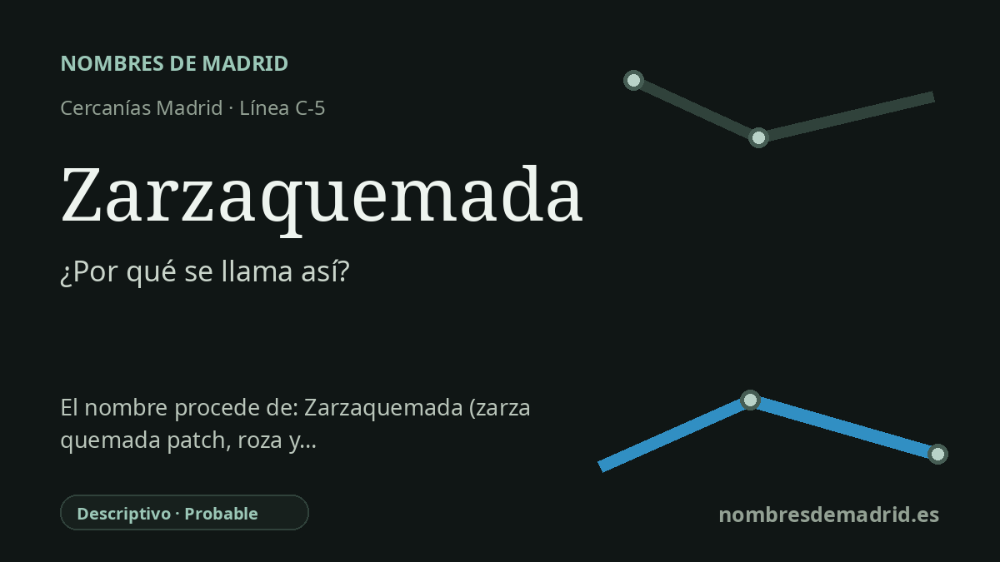

Publicado el · Investigación de Nombres de Madrid · Cómo verificamos cada origen · 12 fuentes consultadas
Respuesta rápida
La estación de Zarzaquemada toma su nombre del barrio de Leganés al que da servicio. El topónimo se entiende como un compuesto descriptivo de zarza y quemada, probablemente ligado a un terreno de zarzales quemado o roturado con fuego.
La historia del nombre
El nombre de la estación procede directamente de Zarzaquemada, el barrio y distrito de Leganés al que da servicio la parada de la C-5. Renfe describe la estación como situada en el barrio homónimo, y el Consorcio Regional de Transportes la recoge como estación de Cercanías con servicio de la línea C-5 y conexiones de autobús.
Detrás del nombre del barrio hay una expresión paisajística muy concreta. En español, zarza designa la zarzamora o un arbusto espinoso; la RAE remite la voz al antiguo sarza y la considera de origen prerromano. Quemada es el femenino de quemado, participio de quemar, por lo que el compuesto se entiende de forma natural como 'zarza quemada' o 'terreno de zarzas quemado'.
Esa lectura encaja con un vocabulario rural más amplio. Antes de que Leganés se expandiera como ciudad metropolitana densa, esta zona formaba parte de un entorno agrícola y abierto al sur de Madrid. Las rozas tradicionales de la Península Ibérica limpiaban vegetación de monte, matorral o dehesa y a menudo la quemaban antes de sembrar; un nombre como Zarzaquemada pudo conservar precisamente esa observación: un terreno donde se habían quemado zarzas o maleza espinosa.
La historia ferroviaria moderna es mucho posterior. El apeadero entró en servicio en 1982 y quedó integrado en la C-5 de Cercanías dentro de la reorganización de la línea y de los nuevos barrios del sur metropolitano. En 1993 la estación fue reformada de forma importante tras las quejas por sus andenes expuestos; la prensa recogió incluso apodos como 'el apeadero de la pulmonía' por el frío y el viento que sufrían los usuarios antes de la reforma.
La conclusión más prudente es, por tanto, doble. La estación se llama así con seguridad por el barrio, y el nombre del barrio es muy probablemente un topónimo descriptivo antiguo referido a zarzas o matorral quemado. Lo que no queda demostrado es el episodio o la parcela concreta que originó el nombre en Leganés; la explicación de la roza y quema es un contexto verosímil, no una historia local documentada de forma directa.